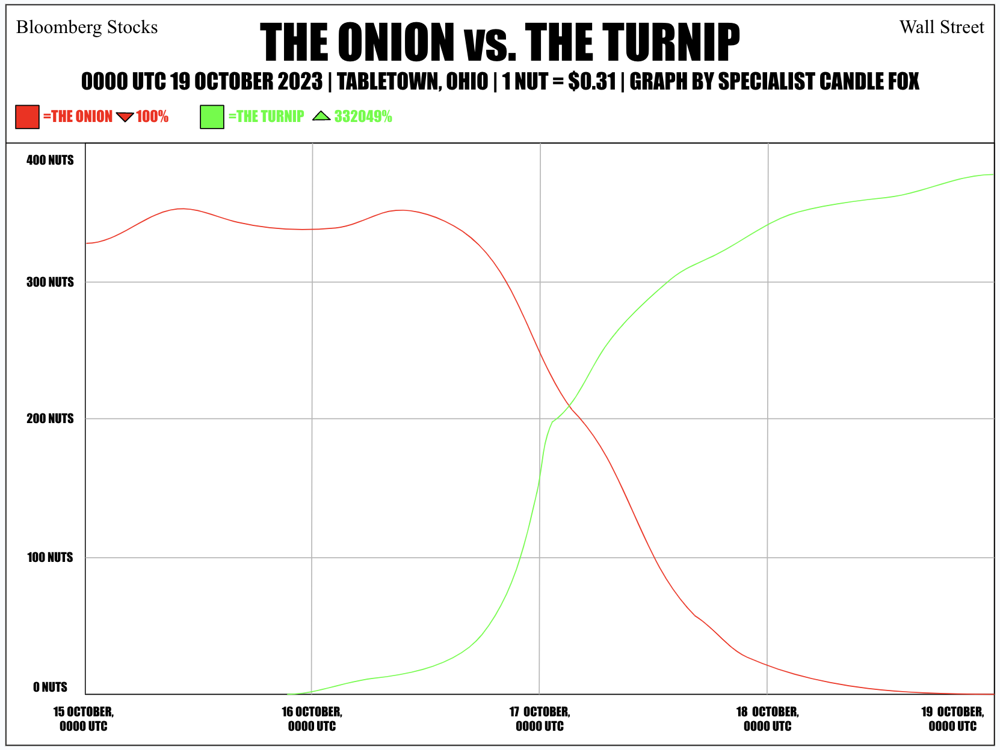
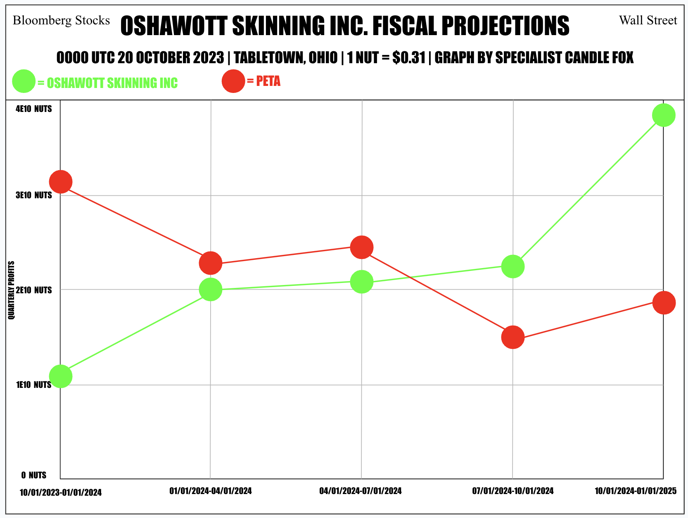

On October 16, large amounts of workers for fellow satire site The Onion quit en masse due to the launch of my very own satire site The Turnip News Network. The Onion recently came out in a press statement that this is very bad for the company and that they may have to shut down. Our main site, Oshawott Skinning Inc, says that things are looking good for the company, but we may have to change the owner, as I am only 13, and thus cannot use PayPal or anything like that. Our resident stocks specialist Candle Fox has made a stock graph to show the collapse of The Onion and the rise of The Turnip. (Stocks as of 0000 UTC 19 October 2023)

Following the downfall of The Onion, many people who invested highly in their stocks were extremely mad, however, Max Brandensen, an amateur entrepeneur who saw potential with The Turnip and invested in stocks for it, is ecstatic because he gained over $13,000,000 overnight. Brandensen, a 24-year-old man from Bakersfield, California, is extremely happy because he no longer has to live in his parents' basement. He has donated approximately $310,037.56 (1,000,000 nuts, the official currency of her hometown of Tabletown, Ohio) to our specialist Candle Fox because, without her, he would have no idea that he is a millionaire, and according to him, all stock specialists are grossly underpaid, which is not true. Fox said that she is grateful for Brandensen's donation, despite her family already having a net worth of about 12.5 million nuts before the donation.
BombCraft, CEO of Oshawott Skinning Inc, the company behind The Turnip, has announced that our company has grown from a net worth of $0 to a net worth of $392,298,673 in just one week, the fastest growth of a new company on record. While we weren't expected to start selling merchandise until 2024, this record jump in profits has made it so we can start selling merchandise in the next week! We have decided to start by selling plushies of our admins. Expect merchandise to start popping up at stores all across the US, Canada, Europe, Japan, and the Philippines within the next month, and in other countries before July 2024. Our resident specialist Candle Fox is back at it again, ending this article off with fiscal projections for us and PETA within the next 15 months.
